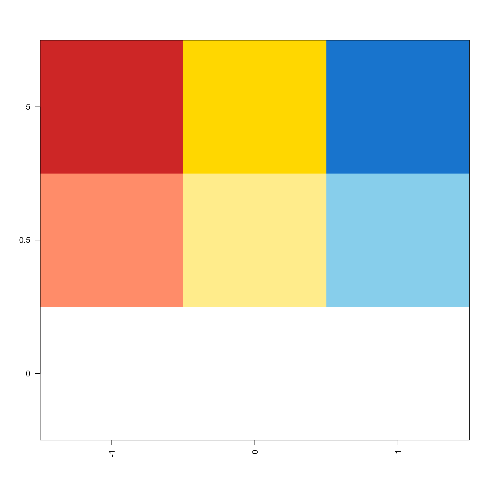
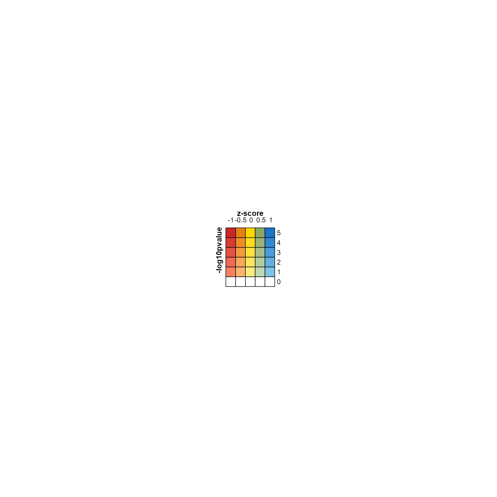
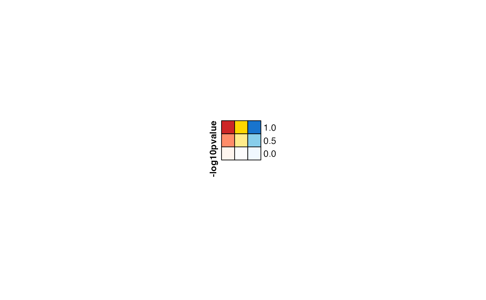
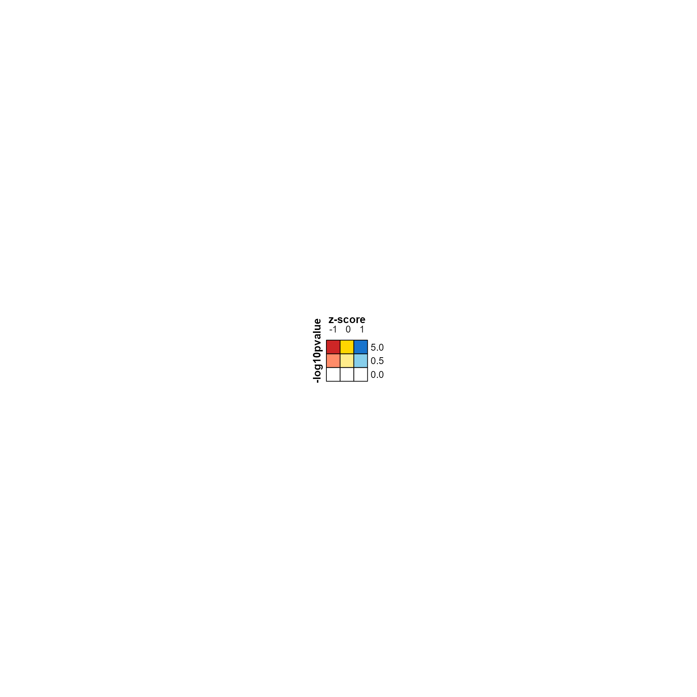
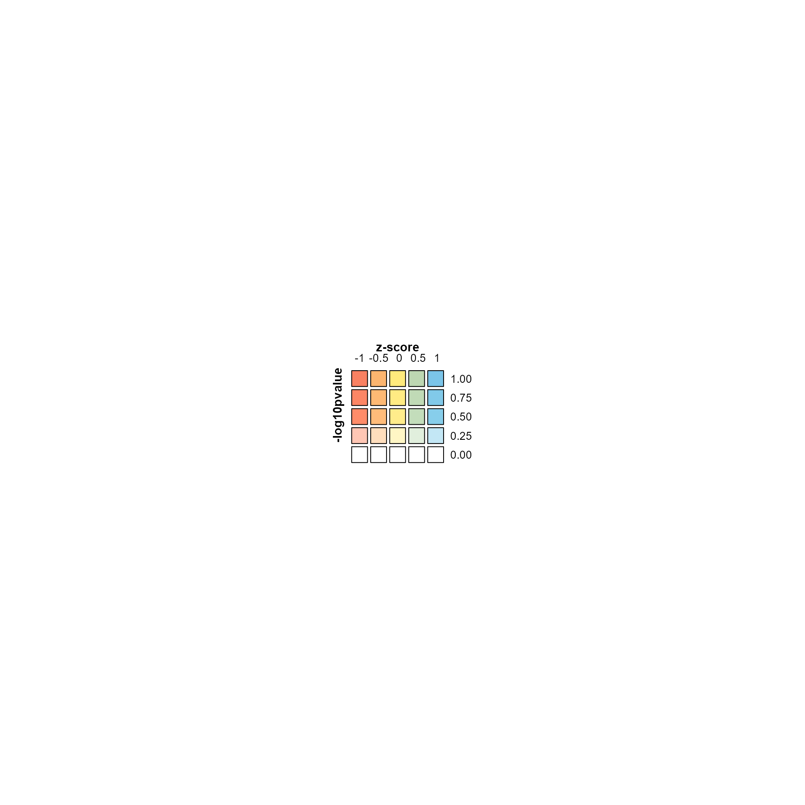

Display colors from bivariate color function
Source:R/jamenrich-bivariatecolor.R
make_legend_bivariate.RdDisplay colors from bivariate color function
Usage
make_legend_bivariate(
col_fun,
pretty.n = 5,
name = "bivariate",
xlab = "",
ylab = "",
title = "",
border = TRUE,
digits = 3,
title_fontsize = 11,
legend_fontsize = 10,
grid_height = grid::unit(5, "mm"),
grid_width = grid_height,
row_breaks = NULL,
column_breaks = NULL,
row_gap = grid::unit(0, "mm"),
column_gap = grid::unit(0, "mm"),
...
)Arguments
- col_fun
functionas defined bycolorRamp2D().- pretty.n
numericvalue passed topretty()to help define a suitable number of labels for the x-axis and y-axis color breaks. For specific breaks, usecolumn_breaks, orrow_breaks.- name
characterstring used to name the resultingComplexHeatmap::Legendobject, normally only useful when trying to find thegridobject for custom modifications.- xlab, ylab
characterstrings used to define x-axis and y-axis labels, effectively the units being displayed. The common values should bexlab="z-score"orxlab="direction', andylab="-log10pvalue"ory="log10 significance".- title
character, currently ignored, but may be used in future if necessary to display a title above the overall bivariate legend.- border
logicalindicating whether to draw a border around each color square in the color legend. This argument can also be acharacterR color value, which will define the color of border drawn around each color square.- digits
numericpassed toformat()to define the labels displayed at each position.- title_fontsize, legend_fontsize
numericvalue passed togrid::gpar(fontsize)to define the font sizes for legend axis labels, and numerical legend labels, respectively.- grid_height, grid_width
grid::unit()objects to define the exact height and width of each colored square in the color legend.- row_breaks, column_breaks
numericoptional vectors which define absolute breaks for row and column values displayed in the color legend. When not supplied, these values are defined usingprettyand argumentpretty.n.- row_gap, column_gap
grid::unit()object to define optional visible gaps between color squares in the color legend. By default, there is no gap. These arguments are provided as a convenient way to impose a gap, since the method used does not otherwise provide a reasonable way to adjust the spacing.- ...
additional arguments are ignored.
Value
ComplexHeatmap::Legends-class object as returned by
ComplexHeatmap::packLegend(), specifically containing a group
of legends, otherwise known as a legend list.
Details
This function produces a "Legend" object as defined by
ComplexHeatmap::Legend().
See also
Other jam utility functions:
ashape(),
avg_angles(),
avg_colors_by_list(),
bulk_cnet_adjustments(),
call_fn_ellipsis_deprecated(),
cell_fun_bivariate(),
collapse_mem_clusters(),
colorRamp2D(),
deconcat_df2(),
display_colorRamp2D(),
enrichList2geneHitList(),
filter_mem_genes(),
filter_mem_sets(),
find_colname(),
find_enrich_colnames(),
get_hull_data(),
get_igraph_layout(),
gsubs_remove(),
handle_igraph_param_list(),
isColorBlank(),
make_point_hull(),
mem_find_overlap(),
order_colors(),
rank_mem_clusters(),
rotate_coordinates(),
subgraph_jam(),
subset_mem(),
summarize_node_spacing(),
xyAngle()
Examples
mcolor <- matrix(ncol=3,
c("white", "salmon1", "firebrick3",
"white", "lightgoldenrod1", "gold",
"white", "skyblue", "dodgerblue3"));
row_breaks <- c(0, 0.5, 5);
column_breaks <- c(-1, 0, 1);
rownames(mcolor) <- row_breaks;
colnames(mcolor) <- column_breaks;
jamba::imageByColors(mcolor);

col_fun <- colorRamp2D(column_breaks=column_breaks,
row_breaks=row_breaks,
mcolor=mcolor)
lgds <- make_legend_bivariate(col_fun,
ylab="-log10pvalue",
xlab="z-score",
pretty.n=5);
jamba::nullPlot(doBoxes=FALSE);
ComplexHeatmap::draw(lgds)

# same as above with slightly larger grid size
# and slightly larger font sizes
lgds <- make_legend_bivariate(col_fun,
ylab="-log10pvalue",
xlab="z-score",
title_fontsize=14,
legend_fontsize=12,
grid_height=grid::unit(7, "mm"),
pretty.n=5);
jamba::nullPlot(doBoxes=FALSE);
ComplexHeatmap::draw(lgds)

lgds <- make_legend_bivariate(col_fun,
ylab="-log10pvalue",
xlab="z-score",
pretty.n=NULL);
jamba::nullPlot(doBoxes=FALSE);
ComplexHeatmap::draw(lgds)

lgds <- make_legend_bivariate(col_fun,
ylab="-log10pvalue",
xlab="z-score",
column_breaks=c(-1, -0.5, 0, 0.5, 1),
row_breaks=c(0, 0.25, 0.5, 0.75, 1),
column_gap=grid::unit(1, "mm"),
row_gap=grid::unit(1, "mm"),
pretty.n=5);
jamba::nullPlot(doBoxes=FALSE);
ComplexHeatmap::draw(lgds)
